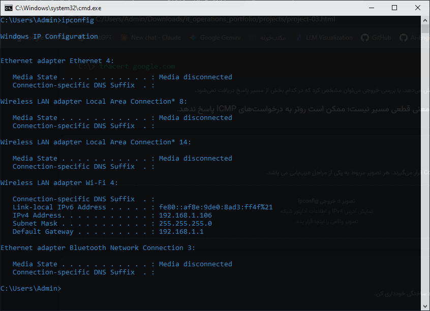
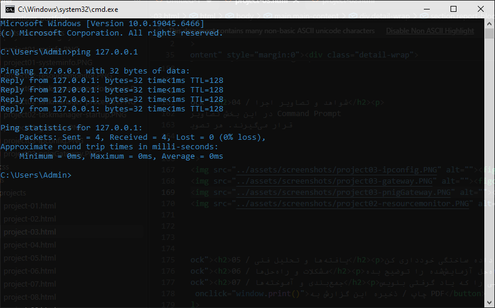
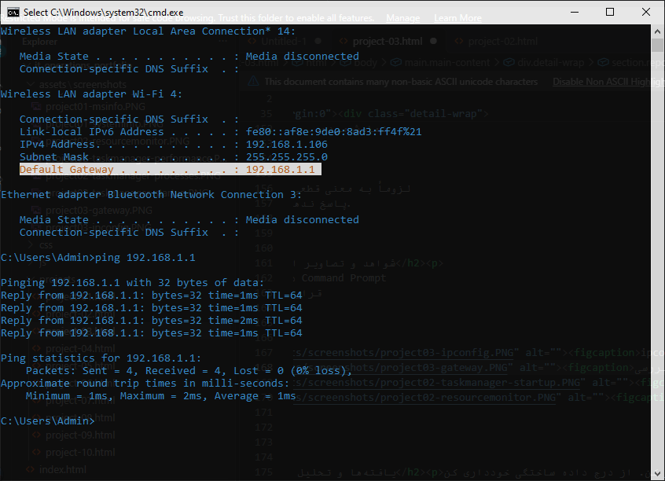

Troubleshooting an Internet Connection
Network Troubleshooting — running Windows network troubleshooting steps and recording the result of each one.
01 / Mission goal
This project identifies the cause of a computer's lost internet connection using a step-by-step troubleshooting method. In the scenario, a user calls and reports that none of the websites open for them. The IT technician's job is to locate the likely source of the problem by running specific commands, without guessing.
02 / Tools and environment
cmd)ipconfig
ping
nslookup
tracert
ipconfig /flushdns
03 / Execution steps
In this scenario, troubleshooting starts from the computer's own network status and gradually extends to checking the connection to the internet.
First, run the ipconfig command in Command Prompt to display the network adapter information.
If the IPv4 address starts with 169.254, the system probably could not obtain an IP address from DHCP. In this case, check the network cable, the Wi-Fi connection and the router.
In the output of the previous command, find the Default Gateway value. This address usually belongs to the router, or default gateway of the network, and is needed to test the computer's connection to the router.
Running the command below tests the system's internal TCP/IP communication. This test shows that the system can communicate with its own Loopback address.
A successful reply indicates that Loopback communication works correctly; however, on its own it does not prove the health of the physical network card or the internet connection.
In this step, replace the word Gateway with the Gateway address obtained in step 2.
If no reply is received, the connection between the system and the router should be checked — the network cable, Wi-Fi or the state of the router itself.
To check whether the system can translate a domain name into an IP address, run the command below.
If the IP address of the domain is returned, the domain-name-to-IP translation works. If an error occurs, the DNS service or settings need to be checked.
In this step, we ping an internet domain to check whether a connection to the destination can be established.
If the command succeeds but the website does not open in the browser, the problem may lie with the browser, the firewall settings or how the browser accesses the internet.
Finally, we use the tracert command to see the path packets take to the destination.
This command shows the path packets take through the various routers to the destination. By reviewing the output, you can tell at which part of the path no reply is received.
04 / Execution screenshots
This section contains real screenshots of the commands run in Command Prompt. Each image corresponds to one of the troubleshooting steps.






05 / Findings and technical analysis
| Step | Sample result | Technical analysis |
|---|---|---|
| ipconfig | 192.168.1.106 | A valid IP address was obtained, and it is not an APIPA address. |
| Default Gateway | 192.168.1.1 | The router (default gateway) address was identified. |
| ping 127.0.0.1 | Success | The system's internal Loopback communication works. |
| ping Gateway | Success | The system's connection to the router works. |
| nslookup google.com | No IP returned | The problem is with DNS, not with the internet itself |
| ping google.com | Success | Communication with the destination via Ping was established. |
| tracert google.com | 18 hops to the destination | A sample path to the destination is shown. |
Based on the sample results, all tests succeeded and no sign of a connection outage was observed in the steps examined. Therefore, in this scenario the internet connection is working.
If the expected reply is not received at one of the steps, that part should be examined as the likely area of the problem. Note, however, that some failures, such as no reply to Ping, may be caused by firewall restrictions or blocked ICMP.
06 / Problems and solutions
| Observed problem | Likely cause | Suggested solution |
|---|---|---|
| IP starting with 169.254 | No address received from DHCP | Check the cable, Wi-Fi and router |
| Ping to the Gateway gets no reply | Connection problem between the system and the router | Check the network cable, Wi-Fi and the router's state |
| nslookup gets no reply | Problem with the DNS service or settings | Run ipconfig /flushdns to clear the DNS cache |
| Ping succeeds but the site does not open | Possible browser or firewall problem | Check the browser and firewall settings |
| No reply in tracert | One of the routers may be limiting responses, or there is a path problem | Check the next hops and, if a path problem is confirmed, report it to the ISP |
1. Changing DNS to an address such as 8.8.8.8 if needed.
2. Reporting a network path problem to the internet service provider (ISP).
The ipconfig /flushdns command clears the system's DNS cache, removing old or invalid information stored in it. However, this command alone does not fix all DNS problems.
07 / Summary and lessons learned
In this project I learned the step-by-step method for troubleshooting an internet connection and how to use built-in Windows tools to identify the likely area of a problem.
The most important lessons from this project:
- Network troubleshooting should start from the nearest point, the user's own system, and gradually move toward the router and the internet.
- The ipconfig command shows the IP address and Gateway information.
- The ping command is used to check connectivity to a specific destination.
- The nslookup command checks how domain-name-to-IP translation works.
- The tracert command shows the path packets take to the destination.
- The ipconfig /flushdns command clears the system's DNS cache.
Finally, I realized that network troubleshooting should not rely on guesswork and random trial; each command gives the technician specific information and helps narrow down the problem area.